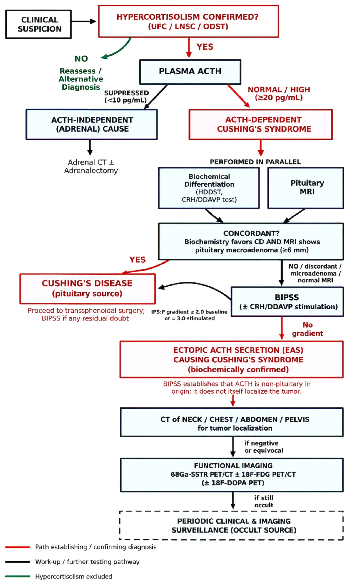
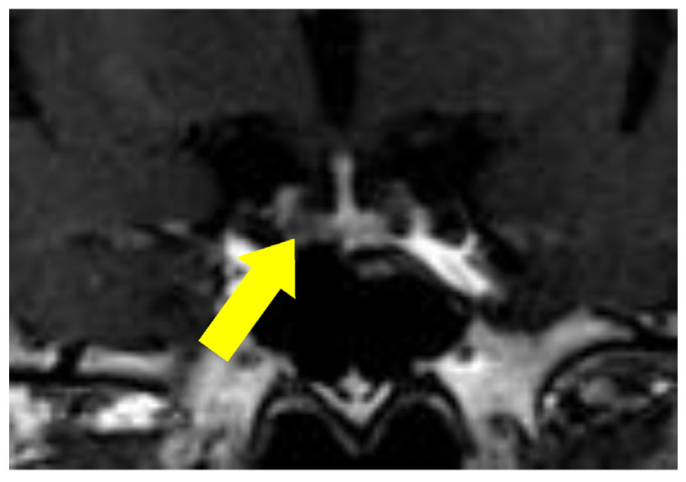
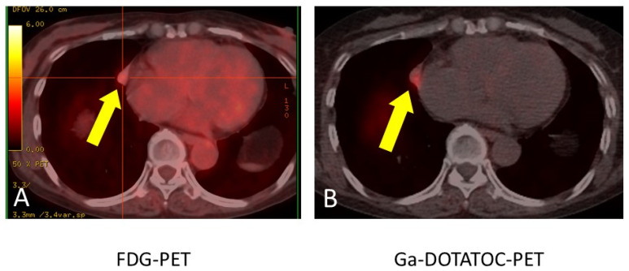
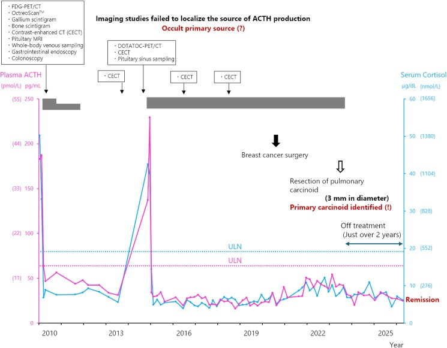

1709 — ACTH lạc chỗ ẩn: thuật toán tìm ổ, cái bẫy "u tuyến yên 4 mm", và khi nào cắt thượng thận hai bên
Tags: pattern:cushing pattern:cuong-thuong-than pattern:u-neuroendocrine vung:tuyen-yen vung:trung-that vung:thuong-than score:IPS-P-gradient protocol:CT-nguc-lat-mong protocol:68Ga-DOTATATE protocol:EUS
Mức chắc chắn (certainty): tổng hợp y văn (literature synthesis) — ghép tổng quan 2026 về hội chứng ACTH lạc chỗ (J Clin Med 2026, PMC13706564, CC BY), đoàn hệ 173 ca ACTH lạc chỗ (Endocr Connect 2025, PMC12464338, CC BY), ca 68 tuổi u tuyến yên 4 mm "giả" rồi tìm ra NET phổi 11 mm (J Clin Med 2025, PMC12734348, CC BY) và ca ẩn 14 năm với carcinoid phổi 3 mm (JCEM Case Rep 2026, PMC13389703, CC BY-NC-ND). Không có ca do nhóm tự chụp.
Câu hỏi thực hành (kịch bản tổng hợp từ các ca/đoàn hệ dưới đây, không phải ca nguyên văn): nữ 52 tuổi, tăng huyết áp, hạ kali máu, tăng đường huyết, teo cơ gốc chi; ACTH 96 pg/mL, cortisol 38 µg/dL, UFC 1.850 nmol/24h, không đổi tư thế; MRI tuyến yên có "nhân 4 mm"; CT ngực–bụng không thấy u. Câu hỏi: có mổ tuyến yên luôn không, tìm ổ bằng gì tiếp theo, và nếu không bao giờ tìm thấy thì xử trí thế nào? Bài chốt ba quyết định: (1) "U tuyến yên nhỏ" không đồng nghĩa bệnh Cushing — phải chứng minh nguồn trung ương bằng BIPSS trước khi mổ; (2) tìm ổ theo bậc: CT lát mỏng → 68Ga-SSTR PET/CT ± FDG → EUS, và lặp lại khi bệnh đang "đỉnh"; (3) nguồn ẩn không có nghĩa là bó tay: kiểm soát cortisol bằng thuốc, theo dõi định kỳ, và cắt thượng thận hai bên khi đe dọa tính mạng/không còn cách nào. Nối 1696 – Bệnh Cushing do u tuyến yên, 1700 – Cushing chu kỳ, 1699 – Cushing ở trẻ, 1694 – Cushing do glucocorticoid ngoại sinh, 155 – Thượng thận.
1. Tổng quan bệnh học – cơ chế hình ảnh: vì sao u chỉ 3 mm mà gây hạ kali nặng và làm mờ cả hình ảnh
- Tần suất: hội chứng ACTH lạc chỗ (ectopic ACTH syndrome — EAS) chiếm 10–20% mọi ca cường thượng thận nội sinh; trong số Cushing phụ thuộc ACTH, EAS khoảng 15% (PMC13706564, PMC13389703). Nguồn không tìm thấy (occult) ở 8–20% ca EAS.
- Vì sao khó tìm: u gây bệnh thường vài milimét; trong ca ẩn kinh điển, carcinoid phổi 3 mm chỉ được phát hiện tình cờ sau 14 năm, trong lúc mổ di căn phổi của một ung thư vú khác (PMC13389703). Đây không phải ngoại lệ hiếm — đó là bản chất của bệnh: u nhỏ, chậm phát triển, nằm trong phổi/trung thất với nhiễu chuyển động hô hấp.
- TẠI SAO hạ kali máu và nhiễm trùng nặng: cortisol tăng rất cao bão hòa enzym 11β-HSD2 ở thận (enzym chuyển cortisol thành cortisone) → cortisol gắn vào thụ thể mineralocorticoid → giữ natri, mất kali, tăng huyết áp và hạ kali máu nặng. Đồng thời cortisol liều cao gây suy giảm miễn dịch — ca 68 tuổi trong PMC12734348 nhập viện vì viêm phổi do Nocardia + Aspergillus, phải thở máy không xâm nhập trước khi tìm được u.
- Vì sao ACTH không bị ức chế: u lạc chỗ tự tiết ACTH, không chịu phản hồi âm của cortisol; cortisol cao nhưng ACTH vẫn cao/bình thường → tăng sản thượng thận HAI BÊN, không phải một khối thượng thận. Đây là lý do "u thượng thận" trên CT ở bệnh nhân ACTH cao là tăng sản, không phải nguyên nhân.
- Vì sao hình ảnh hay âm tính: ngoài kích thước nhỏ, cortisol cao có thể giảm biểu hiện thụ thể somatostatin 2 (SSTR2) — giả thuyết được nêu trong ca 14 năm, nơi nghiệm pháp octreotide ức chế ACTH > 50% dự báo đáp ứng và có thể giúp giữ SSTR2 cho lần chụp sau (PMC13389703). Vì vậy một lần PET âm không loại trừ, nhất là khi chưa kiểm soát cortisol.
- Định lượng trong đoàn hệ 173 ca EAS (PMC12464338): tuổi trung vị 42 (29–55); UFC 3.011 nmol/24h, LNSC 87,2 nmol/L; tử vong 28,9%; sống 3 năm 77%, 5 năm 70%; di căn 25,4%; u ẩn 26 ca (15%) có sống 3 và 5 năm chỉ 58%; cắt thượng thận hai bên 47 ca (27,2%) — 32 ca vì cường cortisol đe dọa tính mạng trước khi tìm được u, 15 ca vì bệnh không mổ được/tái phát.
- Yếu tố tiên lượng tử vong (đa biến): tuổi ≥ 51 (HR 3,53), di căn (HR 2,93), cường cortisol còn hoạt động (HR 5,58), LNSC > 130 nmol/L (HR 2,81). Điểm cốt lõi: kiểm soát cortisol là can thiệp sống còn, không chờ tìm ra u.
2. Mẫu hình + chẩn đoán phân biệt theo vị trí (gamut)
- Lồng ngực — hơn một nửa số ca: carcinoid phế quản 20–40%, ung thư phổi tế bào nhỏ (SCLC) 10–40%, u neuroendocrine tuyến ức 5–10% (PMC13706564). Trên CT: nốt nhỏ, bắt thuốc, bờ rõ, có thể gây xẹp phổi/xẹp thùy nếu ở trung tâm; u tuyến ức ở trung thất trước.
- Ổ bụng: u neuroendocrine tụy 10–20%, pheochromocytoma/paraganglioma 2–6%. Pheo tiết ACTH lạc chỗ là ca "hai trong một": vừa tăng catecholamine, vừa Cushing — kiểm soát huyết áp trước khi can thiệp.
- Nơi khác: ung thư giáp thể tủy 2–10%, hiếm hơn ở tuyến tiền liệt, đường tiêu hóa, buồng trứng.
- Không tìm thấy (occult) 8–20%: hầu hết về sau là carcinoid phế quản nhỏ, chậm phát triển, có thể âm tính trên CT và PET trong nhiều năm. Đây là một "vị trí" trong gamut, không phải chẩn đoán loại trừ.
- Hai kiểu hình lâm sàng – hình ảnh:
- Thể hung hãn: SCLC hoặc NET độ cao, hạ kali rất nặng, teo cơ, sụt cân, tăng huyết áp kháng trị, nhiễm trùng cơ hội; u thường thấy được nhưng bệnh đã lan.
- Thể âm thầm: carcinoid phổi/thymic độ thấp, béo trung tâm, mặt tròn, rạn da giống bệnh Cushing; u rất nhỏ, có khi chỉ phát hiện nhờ mổ vì lý do khác.
- Hệ quả trên hình ảnh: tăng sản thượng thận hai bên (nhánh dày, thân dày) — dấu hiệu gợi ý ACTH phụ thuộc, không định vị được u. Đừng dừng lại ở "u thượng thận".
3. Bảng so sánh phân biệt (ma trận đối chiếu)
| Thực thể | Hình ảnh / xét nghiệm điển hình | Chốt vào (rule-in) | Chốt loại (rule-out) | Gợi ý xác nhận |
|---|---|---|---|---|
| Bệnh Cushing do u tuyến yên | Microadenoma < 10 mm (trung bình 5 mm), MRI 3T động học; ACTH không bị ức chế hoàn toàn; BIPSS có gradient trung tâm | IPS:P ≥ 2 trước / ≥ 3 sau kích thích + MRI phù hợp | BIPSS không gradient + MRI chỉ có nốt nhỏ không đặc hiệu → nghĩ lạc chỗ | BIPSS; MRI 3T; thử mô bệnh sau mổ |
| ACTH lạc chỗ — carcinoid phổi | Nốt phổi nhỏ, bắt thuốc, SSTR-avid trên 68Ga-DOTATATE, FDG thấp; có thể xẹp phổi | U phổi SSTR+ + ACTH lạc chỗ đã chứng minh bằng BIPSS + mô bệnh ACTH+ | Nốt phổi không bắt SSTR, không đổi theo điều trị → không chắc | CT lát mỏng; DOTATATE; VATS + IHC ACTH |
| ACTH lạc chỗ — SCLC | Khối trung tâm, lớn, hoại tử, hạch trung thất; FDG rất cao | Khối phổi trung tâm + FDG cao + hạ kali nặng | Tổn thương nhỏ, FDG thấp, SSTR cao → nghĩ carcinoid | FDG-PET; sinh thiết |
| ACTH lạc chỗ — u tuyến ức | Khối trung thất trước, SSTR+, có thể xâm lấn màng phổi | Khối trung thất trước + SSTR+ + ACTH cao | Trung thất bình thường trên CT lát mỏng | CT/MRI trung thất; DOTATATE; mô bệnh |
| ACTH lạc chỗ — NET tụy | Khối tụy bắt thuốc thì động mạch, SSTR+; có thể di căn gan | Khối tụy + SSTR+ + ACTH cao | Tụy bình thường trên EUS → giảm khả năng | EUS + FNA; DOTATATE; CT bụng 3 thì |
| ACTH lạc chỗ — pheo | Khối thượng thận bắt thuốc mạnh, có thể hai bên; tăng metanephrine | Metanephrine tăng + khối thượng thận | Metanephrine bình thường → loại trừ | Metanephrine; MIBG/DOTATATE; chẹn alpha trước mổ |
| Nguồn ẩn (occult) | CT + SSTR PET âm tính, có thể âm tính nhiều năm; ACTH vẫn cao | BIPSS không gradient + không thấy u sau CT lát mỏng và SSTR PET | Thấy u SSTR+ ở lần chụp lặp → không còn ẩn | Theo dõi định kỳ; lặp PET khi đang đỉnh; kiểm soát cortisol |

Lưu đồ: xác nhận cường cortisol → ACTH → phân biệt trung ương/lạc chỗ (HDDST, CRH/DDAVP, MRI, BIPSS) → CT lát mỏng → 68Ga-SSTR PET/CT ± FDG → theo dõi định kỳ nếu còn ẩn. Nguồn: J Clin Med 2026 (PMC13706564), CC BY 4.0, nguyên bản.4. Protocol chẩn đoán – định vị – điều trị (kèm sơ đồ quyết định)
- Bước 1 — xác nhận cường cortisol và ACTH phụ thuộc: UFC 24h, cortisol nửa đêm (LNSC hoặc cortisol huyết thanh 23:00), test ức chế dexamethasone 1 mg. ACTH ≥ 20 pg/mL = phụ thuộc ACTH; ACTH < 10 pg/mL = nguồn thượng thận (u tuyến/vỏ thượng thận). Không có bước này thì mọi hình ảnh đều vô nghĩa.
- Bước 2 — phân biệt tuyến yên với lạc chỗ: HDDST 8 mg (ức chế > 50% gợi ý tuyến yên, nhưng không đủ), CRH/DDAVP, MRI tuyến yên 3T động học. Nếu MRI bình thường, chỉ có microadenoma < 6 mm, hoặc kết quả không phù hợp → BIPSS (lấy máu xoang đá dưới hai bên + ngoại vi, trước và sau CRH/desmopressin). IPS:P ≥ 2 trước, ≥ 3 sau kích thích = nguồn trung ương; không gradient = lạc chỗ. Kiểm tra đặt catheter bằng tỉ lệ prolactin IPS:P ≥ 1,8–2.
- Bước 3 — định vị ổ: CT lát mỏng cổ–ngực–bụng–chậu (ngực ≤ 1–2 mm, có cản quang) là bước đầu; sau đó 68Ga-SSTR PET/CT (DOTATATE/DOTATOC) ± 18F-FDG PET/CT. SSTR PET có độ nhạy 57–82% để tìm nguồn EAS; FDG hữu ích cho SCLC/NET độ cao, nhưng thường âm hoặc rất thấp ở carcinoid biệt hóa tốt. EUS cho tụy/thượng thận; 18F-DOPA là lựa chọn bổ sung.
- Bước 4 — nếu vẫn ẩn: kiểm soát cortisol bằng metyrapone, ketoconazole, osilodrostat (ức chế tổng hợp cortisol) hoặc mitotane; theo dõi định kỳ bằng CT/PET, đặc biệt khi bệnh đang đỉnh (Cushing chu kỳ — xem 1700). Không mổ tuyến yên "mò" khi chưa chứng minh nguồn trung ương.
- Bước 5 — điều trị triệt để: cắt u (VATS/cắt thùy phổi, cắt tuyến ức, cắt tụy, cắt thượng thận nếu pheo) là điều trị khỏi; trước mổ phải ổn định cortisol, kali, huyết áp, đường huyết và điều trị nhiễm trùng.
- Bước 6 — cắt thượng thận hai bên (bilateral adrenalectomy — BLA): chỉ định khi cường cortisol đe dọa tính mạng không kiểm soát được bằng thuốc, u không mổ được, hoặc nguồn ẩn kéo dài. Trong đoàn hệ 173 ca, 27,2% phải BLA, 32 ca làm trước khi tìm được u. BLA kiểm soát cortisol ngay nhưng phải thay glucocorticoid + mineralocorticoid suốt đời; không có nguy cơ hội chứng Nelson như trong bệnh Cushing (vì không có u tuyến yên), nhưng phải theo dõi u lạc chỗ vì u có thể lộ ra, tiến triển hoặc tái phát sau BLA. Nội soi ổ bụng là đường ưu tiên.
- Sơ đồ quyết định:
flowchart TD
A[Nghi Cushing: UFC, LNSC, test 1 mg] --> B{Xac nhan cuong cortisol?}
B -->|Khong| C[Tim nguyen nhan khac]
B -->|Co| D[Do ACTH]
D -->|ACTH duoi 10 pg/mL| E[Nguon thuong than: CT thuong than, xet nghiem u tuyen]
D -->|ACTH tu 20 pg/mL tro len| F[HDDST, CRH-DDAVP, MRI tuyen yen 3T]
F --> G{Ket qua dong thuan va MRI co macro/thay ro?}
G -->|Co| H[Benh Cushing: mo xuyen buom]
G -->|Khong| I[BIPSS kem prolactin: IPS-P lon hon 2 truoc, 3 sau]
I -->|Co gradient| H
I -->|Khong gradient| J[ACTH lac cho: CT lat mong co-nguc-bung-chau]
J --> K{Thay u?}
K -->|Co| L[SSTR PET neu can xac dinh; sinh thiet hoac cat u]
K -->|Khong| M[68Ga-SSTR PET/CT va FDG PET/CT]
M --> N{Thay u?}
N -->|Co| L
N -->|Khong| O[Kiem soat cortisol bang thuoc va theo doi dinh ky]
O --> P{Cuong cortisol de doa tinh mang hoac u khong mo duoc?}
P -->|Co| Q[Cat thuong than hai ben noi soi]
P -->|Khong| O
5. Biến thể bình thường và cạm bẫy
- "Nhân 4 mm ở tuyến yên" không phải bằng chứng bệnh Cushing: trong ca PMC12734348, bệnh nhân 68 tuổi có nhân 4 mm được cho là microadenoma; mổ xuyên bướm không cải thiện cortisol, mô bệnh là u tuyến yên KHÔNG chức năng. U tình cờ tuyến yên gặp ở ~10% dân số — không mổ khi chưa có BIPSS.
- BIPSS dương tính giả ở EAS: một số u lạc chỗ vẫn đáp ứng CRH và có gradient; thêm vào đó dòng chảy bất thường hoặc đặt catheter sai có thể tạo gradient giả. Luôn kiểm tra prolactin IPS:P và lặp khi bệnh đang đỉnh nếu nghi chu kỳ.
- BIPSS âm tính giả: xoang đá dưới bên phải đổ trực tiếp vào tĩnh mạch cảnh, hoặc dòng chéo; nếu prolactin thấp, kết quả không đáng tin.
- FDG "nhẹ" không loại trừ carcinoid: trong ca PMC12734348, FDG SUVmax 2,4 (rất thấp), trong khi DOTATOC SUVmax 4,1 trên cùng nốt 11 mm cạnh màng tim. Bỏ qua vì "FDG không đáng kể" là bỏ sót u.
- CT âm tính không loại trừ: ca 14 năm có CT ngực âm tính năm 2018, u 3 mm chỉ thấy năm 2023 khi mổ di căn phổi vú. Với u ẩn, theo dõi dài hạn là một phần của phác đồ, không phải thất bại.
- Tăng sản thượng thận hai bên ≠ u thượng thận: ACTH cao + thượng thận to hai bên là hệ quả, mổ thượng thận một bên sẽ không chữa khỏi và có thể gây suy thượng thận.
- Cushing chu kỳ: xét nghiệm và BIPSS lúc "pha trũng" có thể âm tính giả; phải lặp nhiều lần, lấy mẫu khi đỉnh (xem 1700).
- Hạ kali máu và nhiễm trùng là nguyên nhân tử vong trước khi tìm được u: phải điều trị nội khoa song song, không chờ chẩn đoán mô học.
- Sau BLA: không có Nelson (không có u tuyến yên), nhưng u lạc chỗ vẫn có thể lộ ra; theo dõi bằng CT/PET định kỳ và ACTH/cortisol (ACTH sẽ rất cao do mất phản hồi âm — đừng nhầm là u tiến triển).
6. Tự lượng giá — Blind Quiz ngay trên trang tĩnh
Ca 1 — "Nhân 4 mm" ở tuyến yên: mổ luôn hay không?

- Bối cảnh: nữ 68 tuổi, tăng huyết áp, hạ kali, tăng đường huyết, mặt tròn, teo cơ; ACTH 60,9 pg/mL, cortisol 58,4 µg/dL, UFC 3,5 mg/24h; MRI có nhân 4 mm ở thùy trước trái.
- Câu hỏi: (1) Nhân 4 mm này có đủ chẩn đoán bệnh Cushing? (2) Bước tiếp theo là gì? (3) Nếu mổ tuyến yên mà cortisol không giảm thì nghĩ gì?
Bấm để hiện đáp án (findings + chẩn đoán)
- Dấu hiệu: MRI T1 sau gadolinium: ổ giảm tín hiệu 4 mm ở thùy trước trái, bờ không rõ — không đặc hiệu; không có dấu hiệu xâm lấn/xoang.
- Chẩn đoán: không đủ. Nhân nhỏ ở tuyến yên gặp ở ~10% người bình thường; cần BIPSS để chứng minh nguồn trung ương (IPS:P ≥ 2 trước, ≥ 3 sau CRH). Trong ca này BIPSS không làm được vì huyết khối tĩnh mạch sâu, nên đã mổ xuyên bướm vừa chẩn đoán vừa điều trị — và cortisol không giảm, mô bệnh là u tuyến yên không chức năng.
- Bài học: "MRI có u" không thay thế chứng minh sinh hóa; nếu mổ mà không giảm cortisol → tìm nguồn lạc chỗ, đừng mổ lại tuyến yên.
- Nguồn ảnh: J Clin Med 2025 (PMC12734348), CC BY 4.0, nguyên bản.
Ca 2 — FDG "nhẹ" và DOTATOC "dương": nốt nào là thủ phạm?

- Bối cảnh: sau khi mổ tuyến yên thất bại, CT ngực thấy nốt 11 mm cạnh màng tim phải, ban đầu bị cho là tổn thương nấm.
- Câu hỏi: (1) Hai PET cho thấy gì? (2) Vì sao FDG thấp mà vẫn phải nghi? (3) Bước xác nhận và điều trị?
Bấm để hiện đáp án (findings + chẩn đoán)
- Dấu hiệu: FDG-PET: ổ bắt nhẹ, SUVmax 2,4; 68Ga-DOTATOC PET: cùng vị trí, SUVmax 4,1 — bắt mạnh hơn FDG.
- Vì sao FDG thấp vẫn nghi: carcinoid biệt hóa tốt không háo glucose mạnh, nhưng giàu thụ thể somatostatin; SSTR PET mới là phương thức định vị phù hợp. FDG chỉ nổi bật ở SCLC/NET độ cao.
- Xác nhận: VATS cắt thùy giữa phổi phải, mô bệnh NET ACTH dương, Ki-67 2,7%; sau mổ ACTH và cortisol bình thường.
- Nguồn ảnh: J Clin Med 2025 (PMC12734348), CC BY 4.0, nguyên bản.
Ca 3 — 14 năm "không tìm thấy u": theo dõi hay bỏ cuộc?

- Bối cảnh: nữ 68 tuổi (năm 2009) có Cushing phụ thuộc ACTH nặng; DOTATOC PET âm tính, không thấy u; được điều trị octreotide LAR vì nghiệm pháp octreotide ức chế ACTH > 50%.
- Câu hỏi: (1) Vì sao vẫn theo dõi thay vì cắt thượng thận hai bên ngay? (2) U được tìm thấy thế nào? (3) Bài học về "âm tính trên PET"?
Bấm để hiện đáp án (findings + chẩn đoán)
- Dấu hiệu: dòng thời gian: 2009–2023 ACTH/cortisol dao động nhưng được kiểm soát bằng octreotide; 2020 ung thư vú; 2023 khi mổ di căn phổi, phát hiện nốt 3 mm cạnh mô phổi, cắt và chứng minh carcinoid ACTH+/SSTR2+; sau đó cortisol bình thường, trục HPA hồi phục, ngừng thuốc.
- Vì sao chưa BLA: bệnh kiểm soát được bằng thuốc, không đe dọa tính mạng cấp; BLA là lựa chọn khi thất bại nội khoa/không mổ được u và phải chấp nhận suy thượng thận suốt đời. Kiểm soát cortisol lâu dài còn có thể giữ biểu hiện SSTR2, tạo điều kiện tìm u sau này (giả thuyết của tác giả).
- Bài học: PET âm không loại trừ u 3 mm; với EAS ẩn, theo dõi nhiều năm + phối hợp đa chuyên khoa (kể cả khi mổ vì bệnh khác) có thể là "cầu nối tới khỏi bệnh".
- Nguồn ảnh: JCEM Case Rep 2026 (PMC13389703), CC BY-NC-ND 4.0, nguyên bản.
Bài liên quan chéo
- 1696 – Bệnh Cushing do u tuyến yên (MRI 3T, BIPSS, Nelson)
- 1700 – Hội chứng Cushing chu kỳ
- 1699 – Bệnh Cushing ở trẻ em
- 1694 – Cushing do glucocorticoid ngoại sinh
- 155 – Thượng thận: tình cờ & tăng sản
- 1675 – Vô kinh trung ương trên MRI tuyến yên
Ảnh
1709_acth-lac-cho_Algorithm_PMC13706564-F1.webp— lưu đồ chẩn đoán và định vị EAS — CC BY 4.0.1709_acth-lac-cho_MRI-tuyen-yen_PMC12734348-F2.jpg— MRI tuyến yên: nhân 4 mm — CC BY 4.0.1709_acth-lac-cho_PET-FDG-DOTATOC_PMC12734348-F7.jpg— FDG (SUVmax 2,4) vs DOTATOC (4,1) — CC BY 4.0.1709_acth-lac-cho_Timeline_PMC13389703-F1.jpg— dòng thời gian 14 năm — CC BY-NC-ND 4.0.- Không tạo composite: có ảnh CC BY-NC-ND nên chỉ dùng nguyên bản, không ghép/crop.
Không dùng để chẩn đoán độc lập khi chưa có người hướng dẫn.